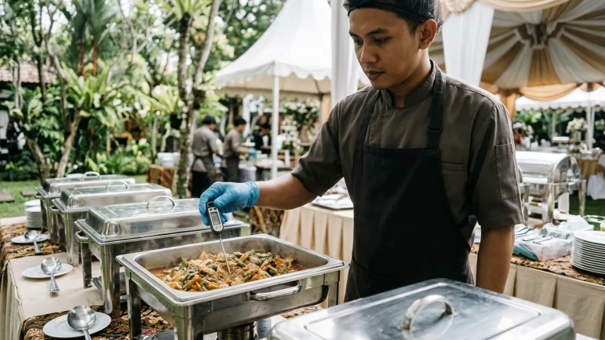

Keamanan makanan coffee break outdoor dijaga dengan membatasi waktu makanan di suhu 5 sampai 60 derajat Celsius: maksimal dua jam, atau satu jam saat panas.
- Zona suhu berbahaya untuk makanan berada pada rentang 5 sampai 60 derajat Celsius, tempat bakteri berkembang paling cepat.
- USDA FSIS menyebut bakteri dapat berlipat ganda dalam waktu sekitar 20 menit pada makanan mudah rusak di zona tersebut.
- Batas waktu aman adalah dua jam, dan satu jam bila suhu udara di atas 32 derajat Celsius.
- Makanan dingin dijaga dengan es, makanan panas dijaga di atas 60 derajat Celsius.
- Pilih menu stabil dan terapkan kebersihan tangan serta pemisahan alat saji.
DAFTAR ISI
- 1. Apa Itu Zona Suhu Berbahaya pada Makanan?
- 2. Berapa Lama Makanan Aman Berada di Luar Ruangan?
- 3. Bagaimana Menjaga Makanan Tetap Dingin atau Panas?
- 4. Perlengkapan Apa yang Dibutuhkan untuk Menjaga Keamanan Makanan?
- 5. Bagaimana Menjaga Kebersihan Petugas dan Area Penyajian?
- 6. Apa yang Harus Dilakukan dengan Sisa Makanan?
- 7. Kesimpulan
- 8. FAQ
1. Apa Itu Zona Suhu Berbahaya pada Makanan?
Zona suhu berbahaya adalah rentang 5 sampai 60 derajat Celsius, tempat bakteri penyebab keracunan makanan berkembang biak dengan cepat pada makanan mudah rusak.
Panduan keamanan pangan dari Food Standards di Australia dan USDA FSIS di Amerika Serikat menggunakan konsep yang sama.
Pada rentang suhu ini, bakteri berkembang jauh lebih cepat dibandingkan pada suhu dingin di bawah 5 derajat Celsius atau suhu panas di atas 60 derajat Celsius.
USDA FSIS menyebutkan bahwa bakteri dapat berlipat ganda dalam waktu sekitar 20 menit pada kondisi yang mendukung. Artinya, makanan yang tampak normal dapat menjadi berbahaya tanpa perubahan bau atau rasa yang jelas.
Pada coffee break outdoor, suhu udara yang tinggi mempercepat makanan memasuki zona berbahaya. Karena itu, pemahaman konsep ini menjadi dasar semua keputusan penyajian di lapangan.
2. Berapa Lama Makanan Aman Berada di Luar Ruangan?
Makanan mudah rusak aman berada di luar ruangan maksimal dua jam pada suhu normal, dan satu jam bila suhu udara di atas 32 derajat Celsius.
Panduan keamanan pangan katering yang diterbitkan pada 2026 menambahkan prinsip bertahap. Makanan yang berada di zona berbahaya kurang dari dua jam masih dapat didinginkan kembali atau disajikan.
Makanan yang berada di zona itu dua sampai empat jam harus segera dikonsumsi dan tidak boleh didinginkan lagi. Makanan yang melewati empat jam harus dibuang.
Untuk coffee break meeting outdoor yang hanya berlangsung 15 sampai 30 menit, risiko dapat dikendalikan dengan menyajikan makanan sesaat sebelum jeda.
Namun, waktu persiapan dan penyajian ikut dihitung. Catat jam makanan mulai dikeluarkan dari penyimpanan agar batas waktu mudah dipantau.
Jika ragu, buang makanan tersebut. Biaya satu porsi makanan jauh lebih kecil daripada risiko peserta jatuh sakit.
3. Bagaimana Menjaga Makanan Tetap Dingin atau Panas?
Makanan dingin dijaga di bawah 5 derajat Celsius dengan wadah pendingin dan es, sedangkan makanan panas dijaga di atas 60 derajat Celsius dengan pemanas.
Untuk makanan dingin, gunakan wadah pendingin berisi es atau gel pendingin dan letakkan di tempat teduh. Isi wadah hanya dengan makanan yang dibutuhkan pada jam tersebut, dan buka tutupnya seperlunya agar suhu tidak naik.
Untuk makanan panas, gunakan chafing dish, termos, atau dispenser berpemanas. Periksa suhu secara berkala menggunakan termometer makanan, karena penilaian dengan perabaan tidak akurat.
Untuk minuman, termos kopi dan teh panas biasanya aman karena suhunya tinggi. Minuman dingin berbahan susu perlu dijaga dengan es dan tidak dibiarkan terlalu lama. Pilihan menu yang lebih stabil dibahas pada artikel menu coffee break outdoor yang tahan cuaca.

Pemeriksaan suhu makanan menggunakan termometer digital untuk memastikan makanan berada di batas aman selama penyajian coffee break outdoor. (Ilustrasi)4. Perlengkapan Apa yang Dibutuhkan untuk Menjaga Keamanan Makanan?
Perlengkapan dasar keamanan makanan acara outdoor adalah wadah pendingin, termometer makanan, penutup makanan, pembersih tangan, sarung tangan sekali pakai, dan tempat sampah tertutup.
- Wadah pendingin dan es. Menjaga makanan dingin tetap di bawah 5 derajat Celsius.
- Termometer makanan. Memastikan suhu makanan dingin dan panas sesuai batas aman.
- Penutup makanan. Melindungi makanan dari debu, angin, dan serangga.
- Pembersih tangan dan akses air bersih. Mendukung kebersihan petugas dan peserta.
- Alat saji terpisah. Mencegah kontaminasi silang antarmenu.
- Pencatat waktu. Membantu memantau lamanya makanan berada di luar penyimpanan.
Perlengkapan ini perlu masuk dalam daftar periksa acara. Jumlahnya mengikuti jumlah peserta, sebagaimana dijelaskan pada panduan menghitung porsi dan anggaran coffee break outdoor.
5. Bagaimana Menjaga Kebersihan Petugas dan Area Penyajian?
Kebersihan dijaga dengan mencuci tangan sebelum menyentuh makanan, memakai alat saji bersih, memisahkan makanan mentah dan matang, serta rutin membersihkan area penyajian.
Petugas perlu mencuci tangan dengan sabun dan air bersih sebelum menyiapkan makanan, setelah menyentuh sampah, dan setelah menggunakan toilet. Bila air tidak tersedia, pembersih tangan dapat dipakai sebagai tambahan, bukan pengganti penuh.
Gunakan penjepit atau sendok saji untuk makanan bersama dan hindari menyentuh makanan langsung dengan tangan.
Peserta yang sedang sakit sebaiknya tidak ikut menyiapkan konsumsi. Area penyajian dilap secara berkala dan sampah dibuang agar tidak mengundang serangga atau hewan.
Kemasan individual membantu mengurangi sentuhan pada makanan bersama. Opsi ini cocok untuk acara dengan jumlah peserta besar.
6. Apa yang Harus Dilakukan dengan Sisa Makanan?
Sisa makanan mudah rusak yang berada di luar lebih dari dua jam, atau satu jam saat cuaca panas, sebaiknya dibuang dan tidak disimpan kembali.
Bagi makanan stabil seperti kue kering dalam kemasan tertutup, sisa dapat disimpan atau dibagikan. Bagi makanan mudah rusak, seperti hidangan berkrim, berbahan susu, atau bersantan, batas waktu harus ditaati.
Pisahkan sisa makanan yang masih layak dari sisa yang harus dibuang. Dokumentasikan jam penyajian pada wadah untuk memudahkan keputusan.
Jika dibagikan kepada peserta, informasikan jam penyajian agar mereka mengetahui batas waktu konsumsinya.
Kebiasaan ini mengurangi pemborosan tanpa mengorbankan kesehatan peserta. Rencana pembuangan dan penyimpanan sisa sebaiknya sudah ditetapkan sebelum acara dimulai.
7. Kesimpulan
Keamanan makanan coffee break outdoor bertumpu pada tiga hal: suhu, waktu, dan kebersihan. Jaga makanan dingin di bawah 5 derajat Celsius, makanan panas di atas 60 derajat Celsius, dan batasi waktu di zona berbahaya hingga dua jam atau satu jam pada cuaca panas. Siapkan perlengkapan yang tepat dan tunjuk penanggung jawab agar prosedur berjalan konsisten.